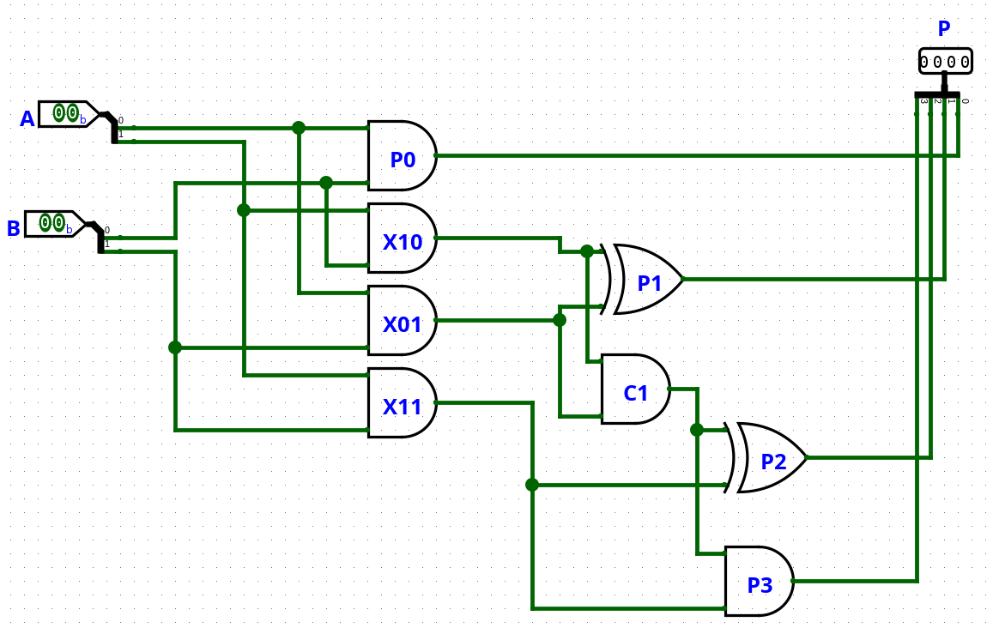
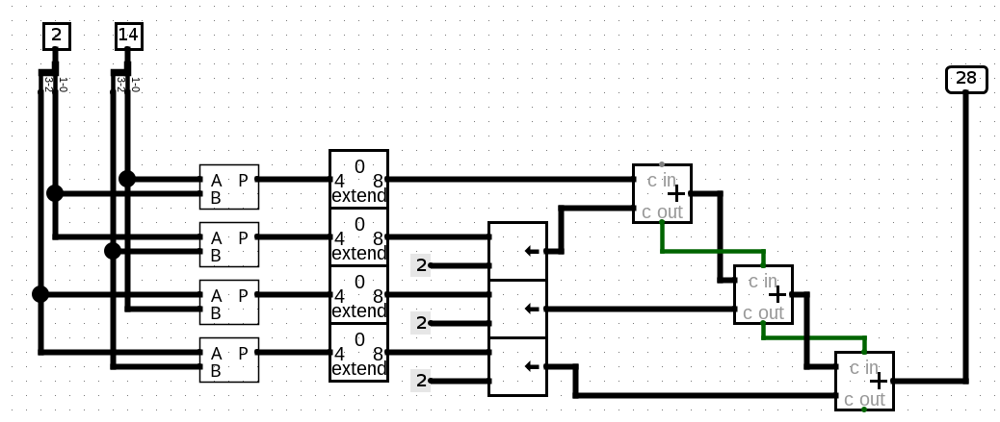
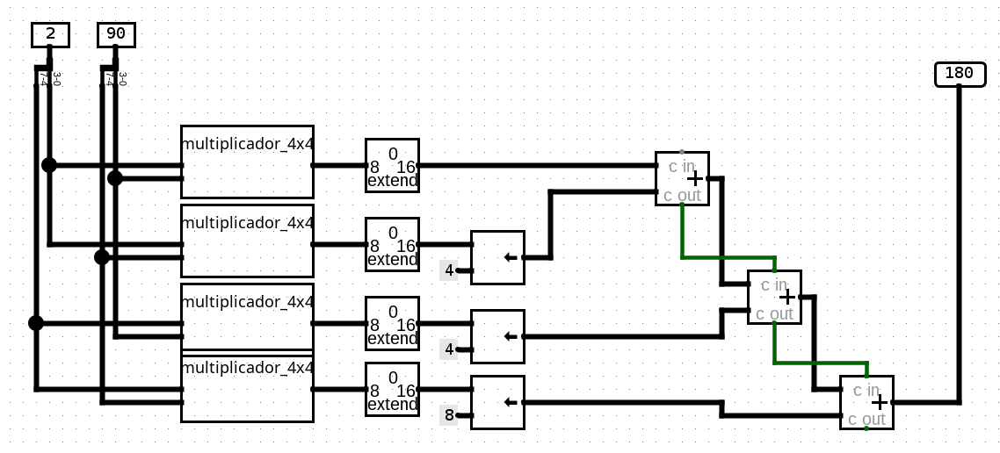

Introdução13.1
Na aula de hoje vamos avançar de soma e subtração para uma operação maior: a multiplicação binária. Isso importa porque esse circuito parece mais complexo à primeira vista, mas na prática nasce da combinação organizada de blocos que você já conhece, como portas lógicas, somadores, splitters, extensores, deslocadores e barramentos.
Na aula anterior, cada coluna resolvia uma soma ou subtração local e repassava carry ou borrow para a próxima posição. Agora a ideia cresce em outra direção: na multiplicação, várias linhas de produtos parciais são geradas, deslocadas e depois somadas para formar o resultado final.
Um multiplicador digital simples pode ser entendido como uma rede de portas AND que gera produtos parciais e de somadores que combinam essas linhas. Multiplicadores maiores podem ser construídos de forma hierárquica, reutilizando multiplicadores menores, extensores, deslocadores e somadores.
Revisão Rápida de Álgebra Booleana13.2
Antes de formalizar os novos circuitos, vale recuperar algumas identidades muito simples de álgebra booleana. O objetivo aqui não é repetir a aula de simplificação, mas lembrar exatamente as propriedades que ajudam a enxergar por que um bit pode copiar, zerar, selecionar ou combinar sinais dentro de um circuito aritmético.
As identidades $A \cdot 0 = 0$ e $A \cdot 1 = A$ são fundamentais para a multiplicação digital porque dizem como um bit pode apagar ou deixar passar um sinal.
Se uma entrada de uma AND vale $0$, a saída obrigatoriamente vale $0$.
$$ A \cdot 0 = 0 $$
Se uma entrada de uma AND vale $1$, a saída simplesmente copia a outra entrada.
$$ A \cdot 1 = A $$
Agora interprete isso em linguagem de hardware. Suponha que $A$ seja um bit do multiplicando e que o outro sinal seja um bit do multiplicador.
- se o bit do multiplicador for $0$, aquele produto parcial desaparece
- se o bit do multiplicador for $1$, aquele produto parcial copia o bit de $A$
É exatamente por isso que a geração de produtos parciais em um multiplicador é feita com portas AND.
A distributiva também aparece com frequência quando lemos a combinação de sinais em circuitos aritméticos:
$$ A(B + C) = AB + AC $$
Ela mostra que um mesmo sinal pode influenciar dois caminhos diferentes ao mesmo tempo.
Se quisermos o processo inverso, também podemos fatorar:
$$ AB + AC = A(B + C) $$
Essas duas leituras aparecem com frequência quando reorganizamos a lógica de controle ou quando queremos enxergar um padrão comum em vários termos da expressão.
Por exemplo, se um mesmo bit $A$ participa de dois produtos possíveis, como $AB$ e $AC$, a fatoração deixa claro que $A$ está selecionando uma entre duas condições agrupadas.
Por fim, as igualdades $A + 0 = A$ e $A + A = A$ ajudam a lembrar como resultados lógicos são combinados. A primeira diz que somar logicamente com $0$ não altera a informação.
$$ A + 0 = A $$
A segunda diz que repetir o mesmo termo em uma OR não cria um novo comportamento.
$$ A + A = A $$
Essas identidades ajudam quando reorganizamos expressões e percebemos que algumas partes não acrescentam informação nova. Em circuitos maiores, isso evita duplicação desnecessária de portas e ajuda a ler a lógica de forma mais limpa.
Essas continhas parecem pequenas, mas elas voltam imediatamente na aula de hoje. Na multiplicação, um bit do multiplicador ora zera uma linha parcial, ora copia o operando. A ideia continua a mesma da aula anterior. Primeiro entendemos o comportamento. Depois transformamos isso em circuito.
Multiplicação Binária por Produtos Parciais13.3
Quando você multiplica números decimais no papel, costuma gerar linhas parciais e depois somá-las. Em binário a lógica é a mesma, mas fica ainda mais clara porque cada dígito só pode ser $0$ ou $1$. Isso faz com que cada linha parcial seja extremamente simples de interpretar.
Se um bit do multiplicador vale $0$, ele não contribui com nada. Se vale $1$, ele copia o multiplicando naquela posição de deslocamento. Portanto, a multiplicação binária pode ser lida como soma de cópias deslocadas do operando.
Para ver isso sem tratar a multiplicação como uma operação misteriosa, considere a conta $101_2 \times 11_2$. Podemos escrevê-la como soma de produtos parciais.
$$ \begin{array}{r} \phantom{+}101 \\ \times\ 011 \\ \hline \phantom{+}101 \\ +1010 \\ \hline \phantom{+}1111 \end{array} $$
Agora leia o que aconteceu linha por linha.
- o bit menos significativo do multiplicador vale $1$, então ele copia $101$
- o bit seguinte também vale $1$, então ele copia novamente $101$, mas deslocado uma posição para a esquerda
- a soma dessas duas linhas gera $1111_2$
Em decimal, isso confirma a conta.
$$ 5 \times 3 = 15 \qquad \Rightarrow \qquad 1111_2 = 15_{10} $$
O ponto importante não é apenas o resultado. O mais importante é a estrutura. A multiplicação apareceu como soma de linhas simples, e não como um bloco mágico que resolve tudo de uma vez.
Essa leitura permite escrever a regra geral. Se o multiplicando for $A$ e o multiplicador for $B$, cada bit $B_j$ do multiplicador gera uma linha parcial. Essa linha é composta pelos produtos:
$$ p_{ij} = A_i \cdot B_j $$
Aqui, $A_i$ é um bit do multiplicando e $B_j$ é um bit do multiplicador. Repare no efeito direto da AND:
- se $B_j = 0$, então $p_{ij} = 0$
- se $B_j = 1$, então $p_{ij} = A_i$
Portanto, cada bit do multiplicador funciona como um seletor que decide se uma certa cópia do multiplicando entra ou não na soma final.
Para entender por que a porta AND representa exatamente essa geração, considere um único bit $A_i$ do multiplicando e um único bit $B_j$ do multiplicador. O produto parcial elementar será:
$$ p_{ij} = A_i \cdot B_j $$
Veja a tabela-verdade.
$$ \begin{array}{c|c||c} A_i & B_j & p_{ij} \\ \hline 0 & 0 & 0 \\ 0 & 1 & 0 \\ 1 & 0 & 0 \\ 1 & 1 & 1 \end{array} $$
Essa é exatamente a tabela de uma AND. Isso significa que o produto parcial de dois bits em multiplicação binária não exige nenhuma nova porta especial. Ele é a própria operação AND.
O que torna um multiplicador maior não é a complexidade do produto de dois bits isolados. É a necessidade de gerar muitos desses produtos e depois somá-los nas colunas corretas.
Agora já podemos responder de forma precisa como nasce um multiplicador simples. Primeiro, portas AND geram os produtos parciais bit a bit. Depois, somadores organizam essas contribuições por coluna, exatamente como fizemos na aula anterior ao tratar carry entre posições vizinhas.
Como Nasce um Multiplicador Simples13.4
Vamos escolher uma implementação pequena o suficiente para ser totalmente legível e grande o suficiente para realmente merecer o nome de multiplicador. O caso mais didático é o multiplicador de $2 \times 2$ bits.
Sejam:
$$ A = A_1A_0 \qquad \text{e} \qquad B = B_1B_0 $$
O produto terá até 4 bits:
$$ P = P_3P_2P_1P_0 $$
Produtos Parciais do Multiplicador 2 x 213.4.1
Os quatro produtos parciais elementares são:
$$ \begin{aligned} p_{00} &= A_0B_0 \\ p_{10} &= A_1B_0 \\ p_{01} &= A_0B_1 \\ p_{11} &= A_1B_1 \end{aligned} $$
Cada um deles pode ser implementado com uma porta AND.
Esse desenho representa apenas a célula mais básica do multiplicador. O circuito completo aparece quando colocamos esses produtos nas colunas corretas do resultado.
Para entender como os quatro produtos parciais são distribuídos nas colunas do resultado é melhor organizar os termos já alinhados às colunas do resultado $P_3P_2P_1P_0$:
$$ \begin{array}{c|c|c|c|l} P_3 & P_2 & P_1 & P_0 & \text{linha parcial} \\ \hline 0 & 0 & A_1B_0 & A_0B_0 & \text{multiplicação por } B_0 \\ 0 & A_1B_1 & A_0B_1 & 0 & \text{multiplicação por } B_1 \text{, deslocada uma posição} \end{array} $$
A primeira linha parcial vem do bit $B_0$. Como $B_0$ está na posição menos significativa, seus produtos caem nas colunas mais à direita: $A_0B_0$ em $P_0$ e $A_1B_0$ em $P_1$.
A segunda linha parcial vem do bit $B_1$. Como $B_1$ representa a próxima posição binária, essa linha entra deslocada uma casa para a esquerda: $A_0B_1$ cai em $P_1$ e $A_1B_1$ cai em $P_2$.
Se lermos por coluna, obtemos:
- coluna 0: apenas $A_0B_0$
- coluna 1: os termos $A_1B_0$ e $A_0B_1$
- coluna 2: o termo $A_1B_1$ e o carry vindo da coluna anterior
- coluna 3: apenas o carry final
Essa leitura é crucial porque ela mostra exatamente onde o Meio Somador entra. A coluna intermediária precisa somar dois produtos parciais, e essa soma pode gerar carry para a coluna seguinte.
Derivação das Saídas13.4.2
Agora podemos escrever cada saída do produto final.
A primeira coluna é imediata:
$$ P_0 = A_0B_0 $$
Na segunda coluna somamos $A_1B_0$ e $A_0B_1$. Isso é exatamente o problema de um Meio Somador.
$$ \begin{aligned} P_1 &= (A_1B_0) \oplus (A_0B_1) \\ C_1 &= (A_1B_0)(A_0B_1) \end{aligned} $$
Na terceira coluna somamos o termo $A_1B_1$ com o carry $C_1$.
$$ \begin{aligned} P_2 &= (A_1B_1) \oplus C_1 \\ P_3 &= (A_1B_1) \cdot C_1 \end{aligned} $$
Observe a lógica do circuito inteiro. Ele não está fazendo nada além de repetir o princípio da aula 12.
- portas AND geram resultados locais
- uma coluna soma os termos que caem nela
- o carry dessa coluna alimenta a seguinte
Leitura algébrica final
$$ \begin{aligned} P_0 &= A_0B_0 \\ P_1 &= (A_1B_0) \oplus (A_0B_1) \\ P_2 &= (A_1B_1) \oplus C_1 \\ P_3 &= (A_1B_1)C_1 \end{aligned} $$
com
$$ C_1 = (A_1B_0)(A_0B_1) $$
Circuito do Multiplicador 2 x 213.4.3
Agora podemos montar o circuito diretamente com portas lógicas. As quatro primeiras portas AND geram os produtos parciais. Depois, duas estruturas de Meio Somador combinam as colunas que possuem mais de um termo.
Leia o circuito por etapas. Primeiro, $A_0B_0$ sai diretamente como $P_0$. Em seguida, $A_1B_0$ e $A_0B_1$ são somados por uma XOR, gerando $P_1$, e por uma AND, gerando o carry $C_1$. Por fim, $A_1B_1$ é somado com esse carry para produzir $P_2$ e $P_3$.
A montagem equivalente no Logisim-evolution aparece abaixo. Repare que ela segue exatamente essa organização: quatro portas AND geram os produtos parciais, e duas pequenas somas combinam as colunas internas do resultado.

Como a Ideia Escala para Mais Bits13.4.4
O multiplicador de $2 \times 2$ bits não é um caso isolado. Ele é a primeira célula completa de uma técnica que pode crescer por hierarquia. Em vez de desenhar todas as portas AND de um multiplicador grande, podemos montar multiplicadores maiores a partir de multiplicadores menores, deslocamentos e somadores.
Essa ideia é uma aplicação direta da distributiva. Primeiro dividimos cada operando em uma parte alta e uma parte baixa. Depois multiplicamos as combinações possíveis entre essas partes e deslocamos cada resultado para a posição correta.
Multiplicador 4 x 4 Usando Blocos 2 x 213.4.5
Considere dois operandos de 4 bits:
$$ A = A_3A_2A_1A_0 \qquad \text{e} \qquad B = B_3B_2B_1B_0 $$
Vamos separar cada um em dois blocos de 2 bits:
$$ A = A_H \cdot 2^2 + A_L \qquad \text{e} \qquad B = B_H \cdot 2^2 + B_L $$
onde:
$$ A_H = A_3A_2, \qquad A_L = A_1A_0 $$
$$ B_H = B_3B_2, \qquad B_L = B_1B_0 $$
Aplicando a distributiva:
$$ \begin{aligned} A \cdot B &= (A_H \cdot 2^2 + A_L)(B_H \cdot 2^2 + B_L) \\ &= A_LB_L + (A_HB_L \ll 2) + (A_LB_H \ll 2) + (A_HB_H \ll 4) \end{aligned} $$
O símbolo $\ll 2$ significa “deslocar 2 posições para a esquerda”, que é o mesmo que multiplicar por $2^2$. O símbolo $\ll 4$ significa deslocar 4 posições, ou multiplicar por $2^4$.
Portanto, um multiplicador $4 \times 4$ pode ser montado com quatro multiplicadores $2 \times 2$:
$$ \begin{array}{c|c|c} \text{produto} & \text{deslocamento} & \text{papel no resultado} \\ \hline A_LB_L & \ll 0 & \text{parte menos significativa} \\ A_HB_L & \ll 2 & \text{contribuição cruzada} \\ A_LB_H & \ll 2 & \text{contribuição cruzada} \\ A_HB_H & \ll 4 & \text{parte mais significativa} \end{array} $$
No Logisim-evolution, essa montagem pode ser feita de forma bem direta. O importante é separar a construção em etapas, porque cada componente tem uma função simples.
Primeiro, as entradas A e B, ambas com 4 bits, passam por splitters. Esses splitters não fazem a multiplicação nem o deslocamento. Eles apenas separam cada barramento em dois grupos de 2 bits:
$$ A \rightarrow A_H, A_L \qquad \text{e} \qquad B \rightarrow B_H, B_L $$
Depois ligamos essas partes em quatro multiplicadores $2 \times 2$:
$$ \begin{array}{c|c|c} \text{bloco} & \text{entradas} & \text{produto gerado} \\ \hline 0 & A_L, B_L & P_{LL} = A_LB_L \\ 1 & A_H, B_L & P_{HL} = A_HB_L \\ 2 & A_L, B_H & P_{LH} = A_LB_H \\ 3 & A_H, B_H & P_{HH} = A_HB_H \end{array} $$
Cada bloco $2 \times 2$ produz um resultado de 4 bits. Mas o resultado final do multiplicador $4 \times 4$ tem 8 bits. Por isso, no circuito do Logisim, cada produto parcial passa por um Bit Extender, configurado para expandir de 4 bits para 8 bits com zeros.
Depois da extensão, os produtos parciais são alinhados com Shifter:
$$ \begin{array}{c|c|c} \text{produto parcial} & \text{operação no Logisim} & \text{valor alinhado} \\ \hline P_{LL} & \text{sem shifter} & P_{LL} \\ P_{HL} & \text{shifter com constante } 2 & P_{HL} \ll 2 \\ P_{LH} & \text{shifter com constante } 2 & P_{LH} \ll 2 \\ P_{HH} & \text{shifter com constante } 4 & P_{HH} \ll 4 \end{array} $$
Esse detalhe é importante: no seu circuito, o splitter separa os blocos de bits, enquanto o Shifter faz o deslocamento. O Bit Extender vem antes do deslocamento para garantir que todos os produtos parciais tenham a mesma largura de 8 bits antes de serem somados.
Por fim, três somadores de 8 bits combinam os quatro valores alinhados:
$$ \begin{aligned} S_1 &= P_{LL} + (P_{HL} \ll 2) \\ S_2 &= S_1 + (P_{LH} \ll 2) \\ P &= S_2 + (P_{HH} \ll 4) \end{aligned} $$
O resultado final sai em um barramento de 8 bits:
$$ P = P_7P_6P_5P_4P_3P_2P_1P_0 $$
A imagem abaixo mostra essa montagem no Logisim-evolution. Observe os dois splitters no início, os quatro blocos multiplicador_2x2, os extensores de bits, os deslocadores e a sequência de somadores que produz o resultado final de 8 bits.

O ponto importante é que não criamos uma técnica nova para 4 bits. Apenas reutilizamos o multiplicador $2 \times 2$ quatro vezes, expandimos os resultados para a largura final, deslocamos cada um para a coluna correta e somamos tudo.
Multiplicador 8 x 8 Usando Blocos 4 x 413.4.6
Agora repetimos a mesma ideia em uma escala maior. Para operandos de 8 bits:
$$ A = A_7A_6A_5A_4A_3A_2A_1A_0 \qquad \text{e} \qquad B = B_7B_6B_5B_4B_3B_2B_1B_0 $$
Separamos cada um em dois blocos de 4 bits:
$$ A = A_H \cdot 2^4 + A_L \qquad \text{e} \qquad B = B_H \cdot 2^4 + B_L $$
onde:
$$ A_H = A_7A_6A_5A_4, \qquad A_L = A_3A_2A_1A_0 $$
$$ B_H = B_7B_6B_5B_4, \qquad B_L = B_3B_2B_1B_0 $$
Aplicando novamente a distributiva:
$$ \begin{aligned} A \cdot B &= (A_H \cdot 2^4 + A_L)(B_H \cdot 2^4 + B_L) \\ &= A_LB_L + (A_HB_L \ll 4) + (A_LB_H \ll 4) + (A_HB_H \ll 8) \end{aligned} $$
Assim, um multiplicador $8 \times 8$ pode ser montado com quatro multiplicadores $4 \times 4$:
$$ \begin{array}{c|c|c} \text{produto} & \text{deslocamento} & \text{papel no resultado} \\ \hline A_LB_L & \ll 0 & \text{parte menos significativa} \\ A_HB_L & \ll 4 & \text{contribuição cruzada} \\ A_LB_H & \ll 4 & \text{contribuição cruzada} \\ A_HB_H & \ll 8 & \text{parte mais significativa} \end{array} $$
No Logisim, a montagem do $8 \times 8$ repete exatamente o mesmo modelo do $4 \times 4$, apenas aumentando as larguras dos barramentos.
Primeiro, os splitters separam cada entrada de 8 bits em duas partes de 4 bits:
$$ A \rightarrow A_H, A_L \qquad \text{e} \qquad B \rightarrow B_H, B_L $$
Em seguida, usamos quatro multiplicadores $4 \times 4$:
$$ \begin{array}{c|c|c} \text{bloco} & \text{entradas} & \text{produto gerado} \\ \hline 0 & A_L, B_L & P_{LL} = A_LB_L \\ 1 & A_H, B_L & P_{HL} = A_HB_L \\ 2 & A_L, B_H & P_{LH} = A_LB_H \\ 3 & A_H, B_H & P_{HH} = A_HB_H \end{array} $$
Cada multiplicador $4 \times 4$ gera 8 bits, mas o resultado final de uma multiplicação $8 \times 8$ pode ter até 16 bits. Então cada produto parcial passa por Bit Extender, agora expandindo para 16 bits.
Depois disso, os Shifters alinham os produtos parciais:
$$ \begin{array}{c|c|c} \text{produto parcial} & \text{operação no Logisim} & \text{valor alinhado} \\ \hline P_{LL} & \text{sem shifter} & P_{LL} \\ P_{HL} & \text{shifter com constante } 4 & P_{HL} \ll 4 \\ P_{LH} & \text{shifter com constante } 4 & P_{LH} \ll 4 \\ P_{HH} & \text{shifter com constante } 8 & P_{HH} \ll 8 \end{array} $$
Por fim, três somadores de 16 bits combinam os quatro valores alinhados:
$$ \begin{aligned} S_1 &= P_{LL} + (P_{HL} \ll 4) \\ S_2 &= S_1 + (P_{LH} \ll 4) \\ P &= S_2 + (P_{HH} \ll 8) \end{aligned} $$
O resultado final sai em um barramento de 16 bits:
$$ P = P_{15}P_{14}\ldots P_1P_0 $$
No Logisim-evolution, a montagem fica como na imagem abaixo. A estrutura é a mesma do multiplicador $4 \times 4$: splitters na entrada, quatro blocos menores, extensores, deslocadores e somadores. A diferença é que agora os blocos internos são multiplicadores $4 \times 4$ e a saída final tem 16 bits.

Essa construção mostra por que multiplicadores grandes normalmente são pensados de forma hierárquica. Um bloco $8 \times 8$ pode ser feito com quatro blocos $4 \times 4$, e cada bloco $4 \times 4$ pode ser feito com quatro blocos $2 \times 2$. O crescimento vem da repetição organizada de blocos menores, extensores, deslocadores e somadores.
Um multiplicador combinacional pode crescer por hierarquia. Primeiro entendemos o $2 \times 2$. Depois usamos quatro desses blocos para montar um $4 \times 4$. Em seguida, quatro blocos $4 \times 4$ montam um $8 \times 8$. A lógica central continua sendo produtos parciais, deslocamento e soma.
Questões13.5
1. Explique, com suas palavras, por que as identidades $A \cdot 0 = 0$ e $A \cdot 1 = A$ são fundamentais para entender produtos parciais em multiplicação binária.
2. Mostre como a distributiva $A(B + C) = AB + AC$ ajuda a reorganizar expressões lógicas em circuitos aritméticos.
3. Reescreva a multiplicação $101_2 \times 11_2$ como soma de linhas parciais e explique o papel do deslocamento.
4. Construa a tabela-verdade do produto parcial elementar $p_{ij} = A_i \cdot B_j$ e diga por que ele é implementado por uma AND.
5. Em um multiplicador de $2 \times 2$ bits, identifique os quatro produtos parciais e diga em quais colunas eles aparecem.
6. Derive as expressões de $P_0$, $P_1$, $P_2$ e $P_3$ para o multiplicador de $2 \times 2$ bits estudado na aula.
7. Explique por que a coluna intermediária de um multiplicador de $2 \times 2$ bits pode ser tratada como um problema de Meio Somador.
8. Mostre como o circuito do multiplicador responde à entrada $A = 11_2$ e $B = 10_2$.
9. Explique como montar um multiplicador $4 \times 4$ no Logisim usando splitters, quatro multiplicadores $2 \times 2$, bit extenders, shifters e somadores.
10. Explique como montar um multiplicador $8 \times 8$ no mesmo modelo, agora usando quatro multiplicadores $4 \times 4$.
1. Porque elas mostram que um bit do multiplicador pode anular ou copiar um bit do multiplicando. Se o bit de controle vale $0$, o produto parcial zera. Se vale $1$, ele reproduz o valor do operando.
2. Ela mostra que um mesmo sinal pode ser distribuído sobre duas possibilidades, como em $AB + AC$. Isso ajuda a reorganizar a expressão, destacar fator comum e enxergar estruturas repetidas no circuito.
3. A conta é:
$$ \begin{array}{r} \phantom{+}101 \\ \times\ 011 \\ \hline \phantom{+}101 \\ +1010 \\ \hline \phantom{+}1111 \end{array} $$
O deslocamento aparece porque cada bit mais significativo do multiplicador representa uma potência de 2 maior, então sua linha parcial entra uma casa à esquerda.
4. A tabela-verdade é:
$$ \begin{array}{c|c||c} A_i & B_j & p_{ij} \\ \hline 0 & 0 & 0 \\ 0 & 1 & 0 \\ 1 & 0 & 0 \\ 1 & 1 & 1 \end{array} $$
Como a saída só vale $1$ quando ambas as entradas valem $1$, o produto parcial é uma AND.
5. Os produtos parciais são $A_0B_0$, $A_1B_0$, $A_0B_1$ e $A_1B_1$. O termo $A_0B_0$ cai na coluna $P_0$. Os termos $A_1B_0$ e $A_0B_1$ caem na coluna $P_1$. O termo $A_1B_1$ cai na coluna seguinte, junto com o carry gerado antes.
6. As expressões são:
$$ \begin{aligned} P_0 &= A_0B_0 \\ P_1 &= (A_1B_0) \oplus (A_0B_1) \\ C_1 &= (A_1B_0)(A_0B_1) \\ P_2 &= (A_1B_1) \oplus C_1 \\ P_3 &= (A_1B_1)C_1 \end{aligned} $$
7. Porque nessa coluna existem exatamente dois termos a serem somados, $A_1B_0$ e $A_0B_1$. Isso é precisamente o caso resolvido por um Meio Somador, que produz soma local e carry.
8. Para $A = 11_2$ e $B = 10_2$, temos $p_{00}=0$, $p_{10}=0$, $p_{01}=1$ e $p_{11}=1$. Assim, $P_0=0$, $P_1=1$, $C_1=0$, $P_2=1$ e $P_3=0$. Logo, o produto é $0110_2$.
9. Os splitters separam $A$ e $B$ em partes alta e baixa de 2 bits. Depois usamos quatro multiplicadores $2 \times 2$: $A_LB_L$, $A_HB_L$, $A_LB_H$ e $A_HB_H$. Cada saída de 4 bits passa por Bit Extender para virar 8 bits. Em seguida, os Shifters alinham os produtos: $A_LB_L$ sem deslocamento, $A_HB_L$ deslocado 2 bits, $A_LB_H$ deslocado 2 bits e $A_HB_H$ deslocado 4 bits. Por fim, três somadores de 8 bits combinam tudo.
10. Os splitters separam $A$ e $B$ em partes alta e baixa de 4 bits. Depois usamos quatro multiplicadores $4 \times 4$: $A_LB_L$, $A_HB_L$, $A_LB_H$ e $A_HB_H$. Cada saída de 8 bits é expandida para 16 bits com Bit Extender. Os Shifters alinham os produtos: deslocamentos de 0, 4, 4 e 8 bits. Três somadores de 16 bits produzem o resultado final.
Próximos passos13.6
Nesta aula, vimos como a multiplicação binária pode ser construída com produtos parciais, deslocamentos e somadores. A divisão binária também pode ser implementada em hardware, mas ela exige uma lógica de decisão: comparar valores, escolher entre manter ou subtrair, e encadear restos parciais. Por isso, vamos deixar a divisão para depois de estudar blocos de seleção e comparação. No próximo capítulo, Módulos MSI Combinacionais: Decodificadores, Encoders, Mux e Demux (Cap. 9), vamos estudar alguns desses blocos funcionais prontos para uso em sistemas maiores.